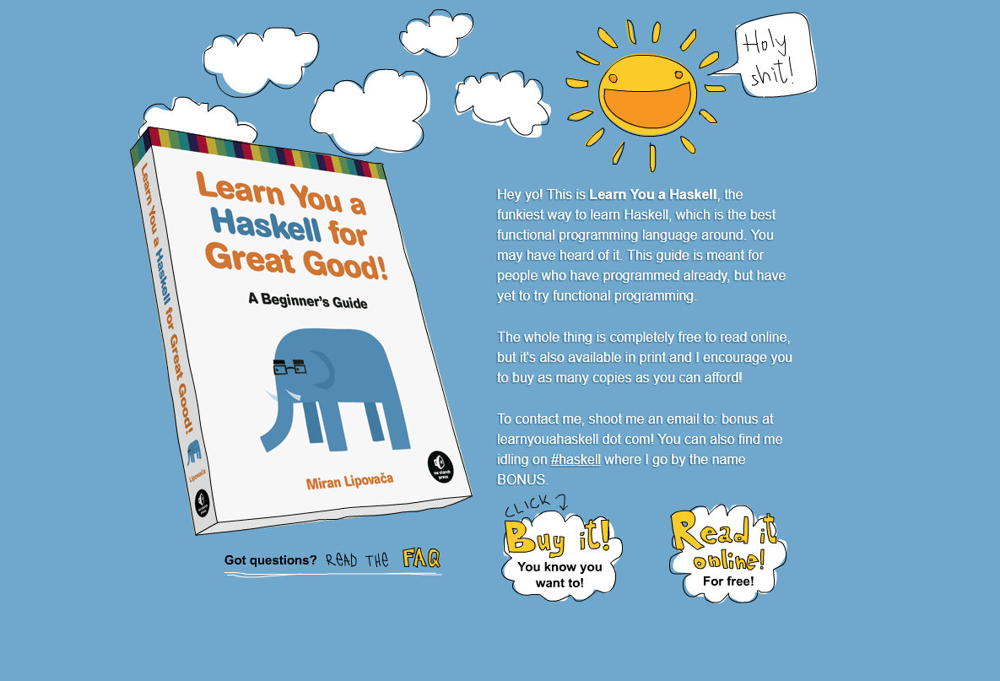
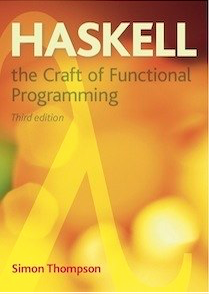

Links to Haskell resources - books, websites etc.
A playlist of videos that Graham has produced is available here : Programming in Haskell - the videos
##Other Texts
Learn you a Haskell For Great Good. This is a free text available to download. 
‘Haskell: the Craft of Functional Programming’, Simon Thompson, Third Edition, Pearson, ISBN 0201882957. 
This brings you to a treasure trove of ways to learn Haskell including
There is a good online community and a very good free email newsletter called Haskell Weekly. You can sign up and it will be delivered, um, weekly.
A Podcast, called The Haskell Intelude. They usually have interviews with significant people in the Haskell world.
There are many online courses. The variety and quality varies. They might be useful if you wish to delve in later at a more advanced level.